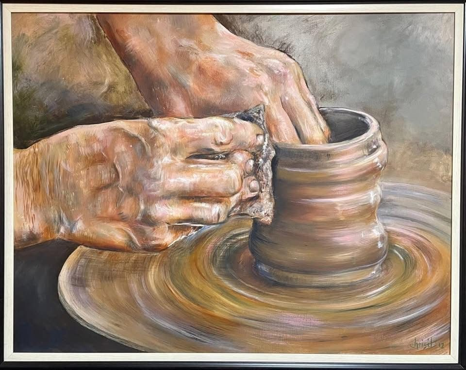
Sondag 09:00 · Horison, Roodepoort
| Weeksdae | |
| Maandag | Gesluit |
| Dinsdag | 08:00 – 13:00 |
| Woensdag | 08:00 – 13:00 |
| Donderdag | 08:00 – 13:00 |
| Vrydag | 08:00 – 13:00 |
| Saterdag | Gesluit |
Weeklikse nuus en aankondigings van die gemeente. Die nuutste verskyn eerste — ouer aankondigings is netjies in die argief hieronder.
NG Gemeente Horison is 'n lewende gemeenskap gegrond op die Woord en die Gees.
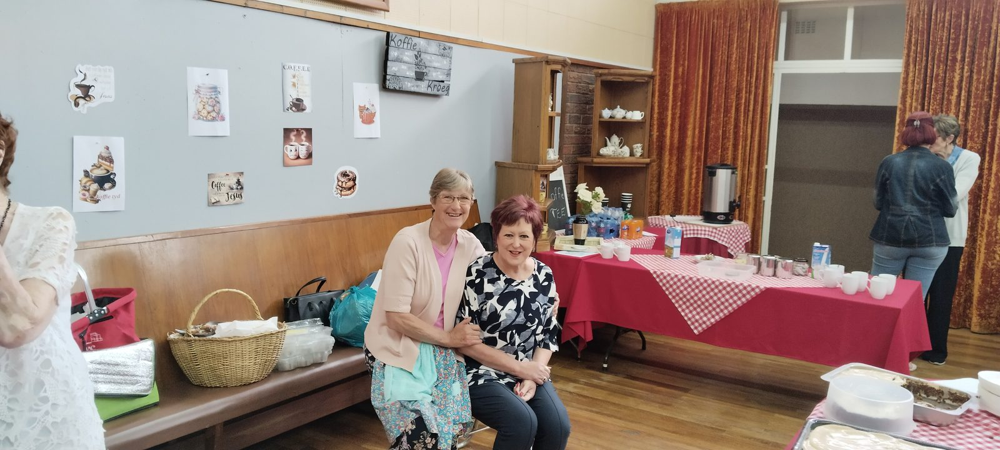
Ons sien na mekaar om en reik uit na ons gemeenskap — deur pastorale sorg, gebed en praktiese hulp aan elkeen wat dit nodig het.
Raak betrokke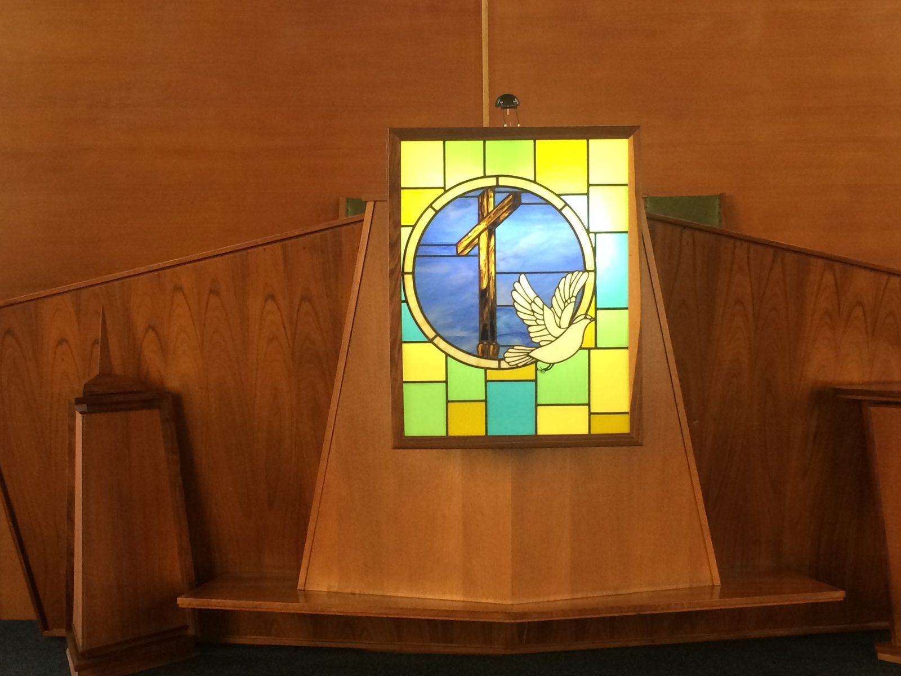
Ons staan op die erfenis van die Reformasie — Genade alleen, Christus alleen, Geloof alleen, die Skrif alleen, en aan God alleen die eer.
Sluit Sondag by ons aan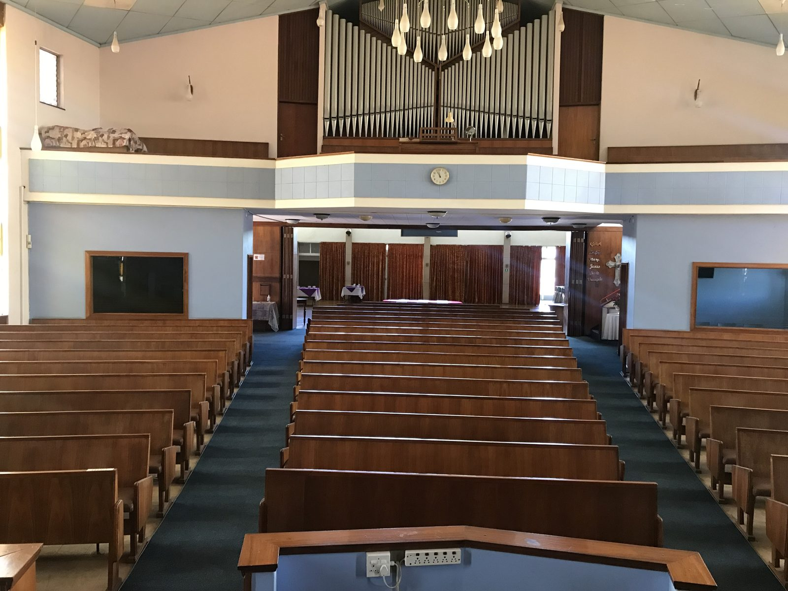
Van katkisasie tot Bybelstudie en jeugbyeenkomste — ons groei saam in geloof, elke ouderdom en elke week van die jaar.
Sien ons program"Een van die duidelikste bewyse dat ek werklik 'n Christen is, is dat die vrug van Christus se Gees in my lewe is. Vroom woorde en getuienisse is mooi maar dit tel min as hierdie innerlike gesindhede en praktiese eienskappe nie bykom nie." — Galasiërs 5:22
Die jaarlikse kerkbasaar is ons gelukkigste samekoms — braai, pannekoek, kerrie en rys, kuns en kuier.
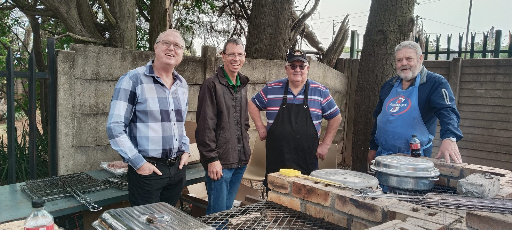
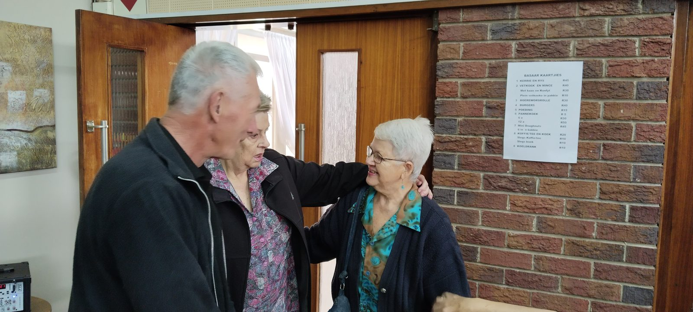
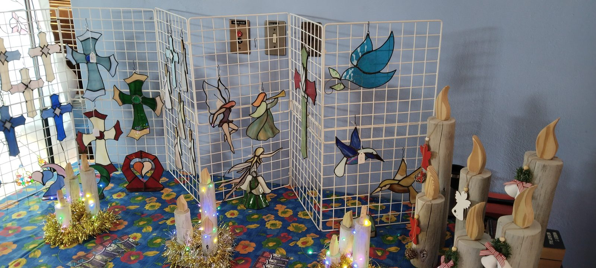
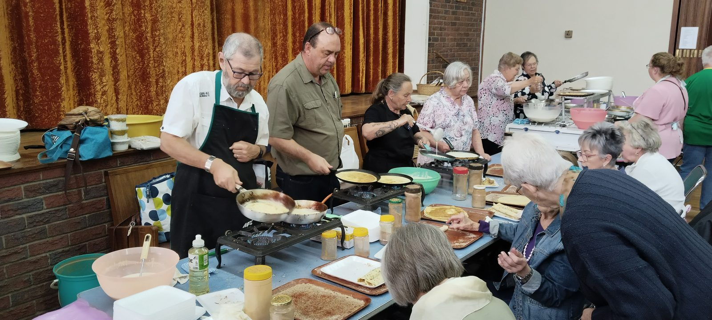
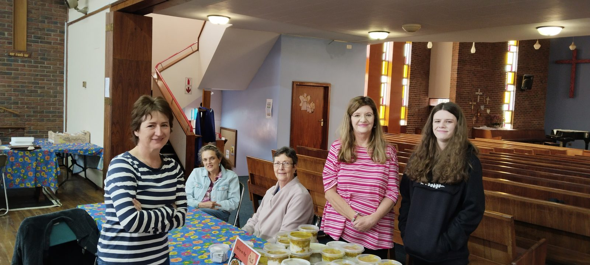
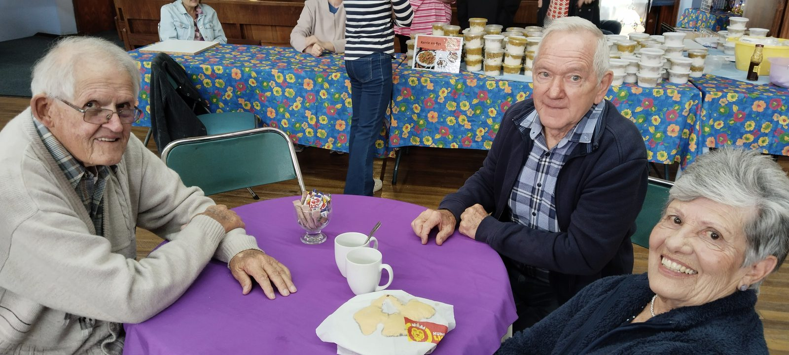
Mis 'n Sondag? Al ons prediking is gratis beskikbaar op YouTube — kyk wanneer dit vir jou pas.
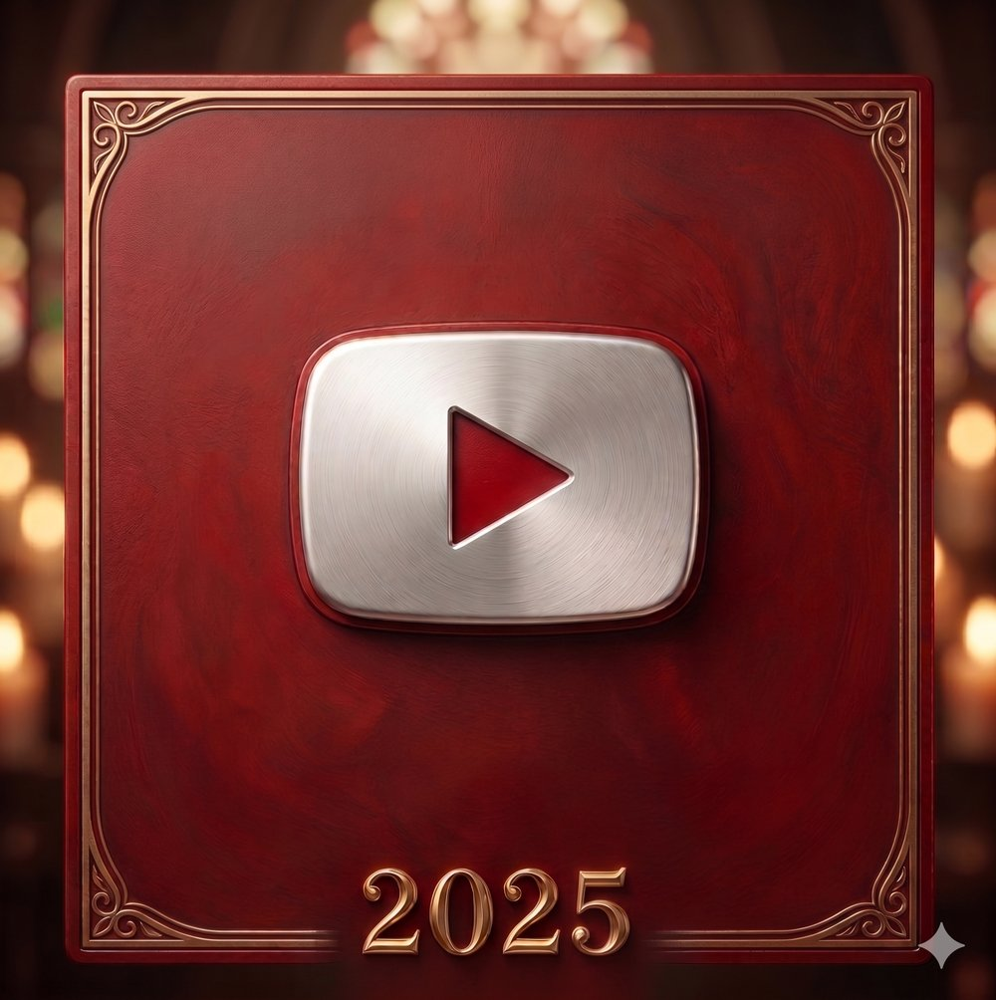
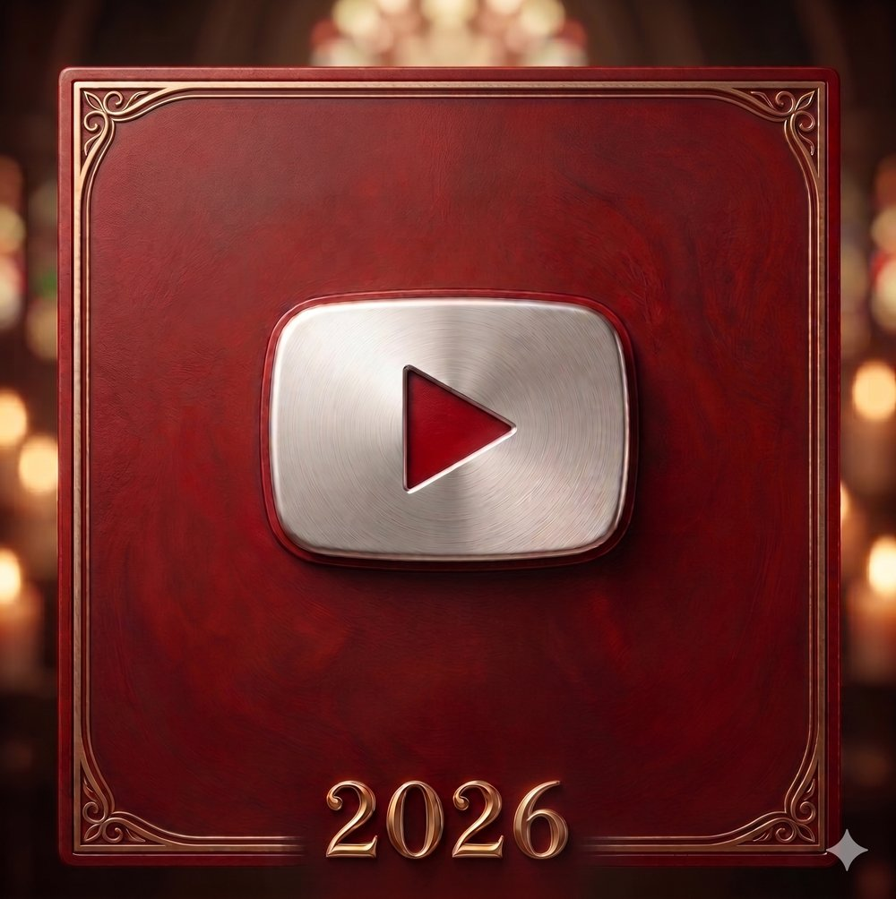
Almal is van harte welkom — of jy nuut is of 'n ou vriend.